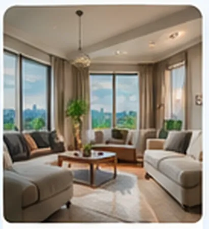

El momento
Devolver la llamada no es retomar la conversación.
Cuando nadie responde, el comprador llama a otra inmobiliaria. La oportunidad se pierde.
Hoy
- El comprador llama
- Nadie responde
- Llama a otra inmobiliaria
- La oportunidad se pierde.
Con EasyRobots
- La llamada es atendida por un agente de voz
- Se continúa en WhatsApp
- Se recoge la información
- Se propone una visita
- Tu equipo recibe el contexto

Cómo funciona
De la llamada a la visita,
en 4 pasos.
EasyRobots atiende tus llamadas, entiende qué busca el cliente, continúa la conversación por WhatsApp y agenda la visita con tu equipo.
-
1. Atiende
la llamadaUn agente de voz responde al instante.
-
2. Recoge
la informaciónDatos, interés, preferencias…
-
3. Propone
la visitaMuestra disponibilidad y agenda.
-
4. Informa
a tu equipoTu comercial recibe todo el contexto.
Una demostración real
Escucha a EasyRobots
responder a un comprador.
Una llamada real. Sin guiones. Para que veas cómo funciona.
La llamada se reproduce directamente aquí.
Esta es una llamada de ejemplo. El tuyo se monta con tus inmuebles, tu agenda y tu forma de trabajar.
15 minutos. Miramos tu caso y te decimos si encaja.Información recogida
- Cliente+34 612 345 6XX
- InterésPiso en Salamanca
- PresupuestoEntre 800.000 € y 1.000.000 €
- DisponibilidadJueves 11:00
- EstadoVisita propuesta
- Comercial asignadoLaura M.
Hola, gracias por llamar a Inmobiliaria. ¿En qué puedo ayudarte?
Hola, me interesa un piso en la zona de Salamanca…
Perfecto. ¿Buscas algo para entrar ya o a medio plazo?
Para entrar ya. Tengo la financiación preaprobada.
Te paso la ficha por WhatsApp. ¿Te viene bien el jueves a las 11:00 para verlo?
El jueves a las once me va bien.
El sistema
Piezas, no un paquete cerrado.
Nos adaptamos a las herramientas que ya utilizas. Y si hace falta una pieza que no existe en tu software, la construimos.
EasyRobots
- Llamadas · agente de voz
- WhatsApp · conversaciones
- Agenda · visitas
- CRM · tu software
- Seguimiento · recordatorios
- Tu equipo · siempre informado
Lo mejor de cada uno
Tecnología que potencia
tu equipo, no lo sustituye.
EasyRobots se encarga de
- Responder llamadas 24/7
- Hacer las preguntas clave
- Recoger toda la información
- Agendar visitas en tu calendario
- Seguimiento y avisos
- Integrarse con tus herramientas
Tu equipo se centra en
- Enseñar los inmuebles
- Valorar y negociar
- Captar nuevos propietarios
- Gestionar casos complejos
- Acompañar en la venta
- Lo que realmente necesita un toque humano
No somos una centralita.
Somos las personas que diseñan, construyen y mantienen tu sistema.
- 14 días para comprobar que encaja con tu forma de trabajar.
- Si no hace lo que hemos definido o no encaja, lo paramos y te devolvemos el dinero.
- Primer mes de mantenimiento incluido.
Hablemos
Vemos qué pasa hoy con las llamadas
que no podéis coger.
Sin compromiso. 15 minutos.